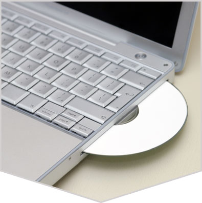
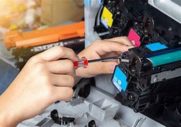

Your Tech, Our Care.
Welcome to Links Computers — a place where every repair is handled with personal care and genuine attention to detail. As an independent technician with a passion for helping people, I take pride in offering honest, reliable service for all kinds of computer and printer issues.
Welcome
Service | Sales | Repairs
we specialize in servicing all kinds of computers, laptops, and printers. Whether it’s a quick tune-up for your PC, a detailed laptop repair, or printer refilling and servicing, we’ve got you covered. With a focus on quality and customer satisfaction, I take the time to ensure your devices are running at their best. Trust me to handle all your tech needs with care and expertise.
I go above and beyond to provide top-tier service for all your computer, laptop, and printer needs. With years of experience and a deep commitment to quality, I ensure every device gets the attention it deserves. Whether it’s optimizing your computer's performance, repairing a laptop issue, or refilling and servicing your printer, I focus on delivering reliable, efficient, and affordable solutions that keep your tech running smoothly. Your satisfaction is my priority — I take pride in offering personalized service that you can trust.
Why Choose Us?
you’re not just another customer — you're a priority. As a dedicated, independent technician, I offer personalized, one-on-one service with a focus on getting your devices back to perfect working condition.
- Expertise & Experience
- Affordable & Transparent
- Trustworthy Service

Image Gallery



Contact Info
Phone: +91 90926 29524 / 98843 00282
Address: opp to vijaya nagar bustand,velachery,chennai
E-mail: Linkscomputers00@gmail.com
brands serviced
- Dell
- HP (Hewlett-Packard)
- Lenovo
- Apple (Mac)
- Acer
- Asus
- Microsoft (Surface)
- Samsung
- Toshiba
- Razer
Printers
- HP (Hewlett-Packard)
- Canon
- Epson
- Lexmark
- Samsung
- Dell
- Ricoh
- Brother
- Kyocera
- Xerox